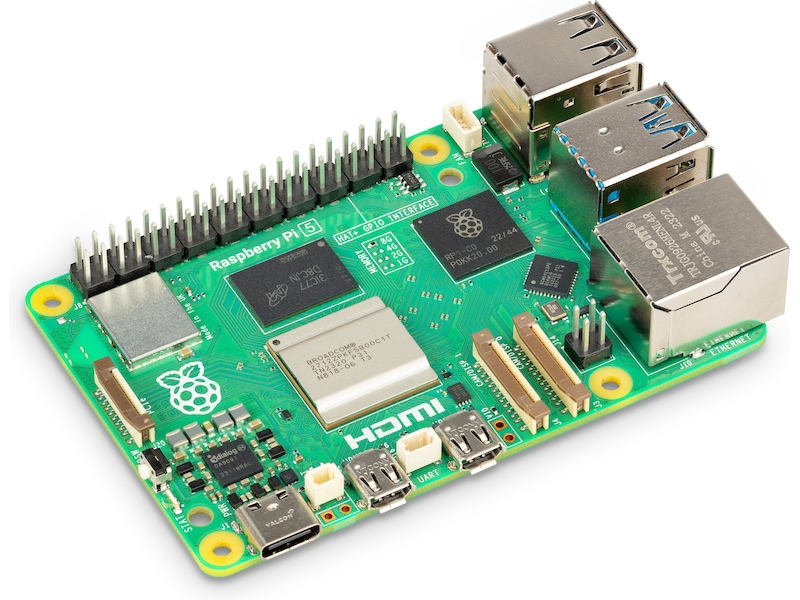

The temperature logger system is a small system that accurately measures temperature in one or multiple rooms. I uses the Rasp berry Pi 5 as the main controller to read temperature data from multiple different temperature sensors. The controller uses a PI-regulator to control a heating element to maintain a desired temperature in a room. All data is stored both in the cloud and in a local database. But the system contains many different parts that work together to achieve this goal. The system is compatible with multiple different temperature sensors, and uses different communication protocols. This introduction will give an overview of the different parts of the system and how they work together to achieve the desired functionality.
Picure above shows the main component of the system, the Raspberry Pi 5.
As mentioned earlier, the system have many working parts. Below is a brief overview of the main components used in the system, the system sketch provides a visual take on the workings of the system:

In short the system has: